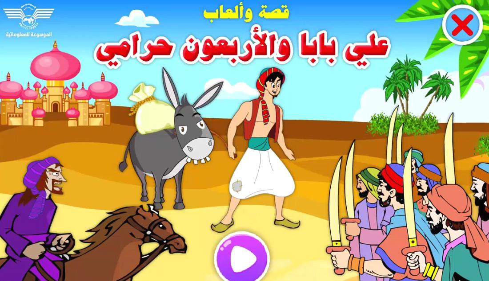
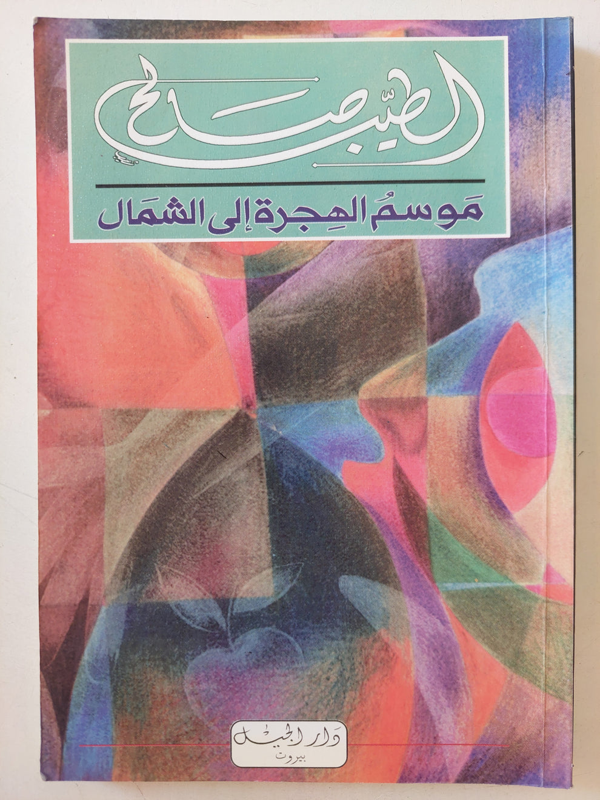
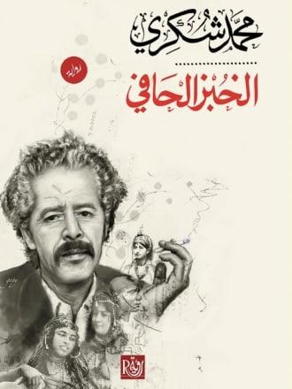
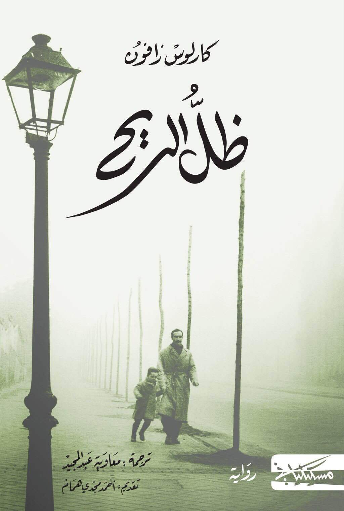
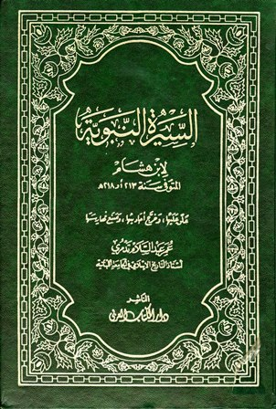
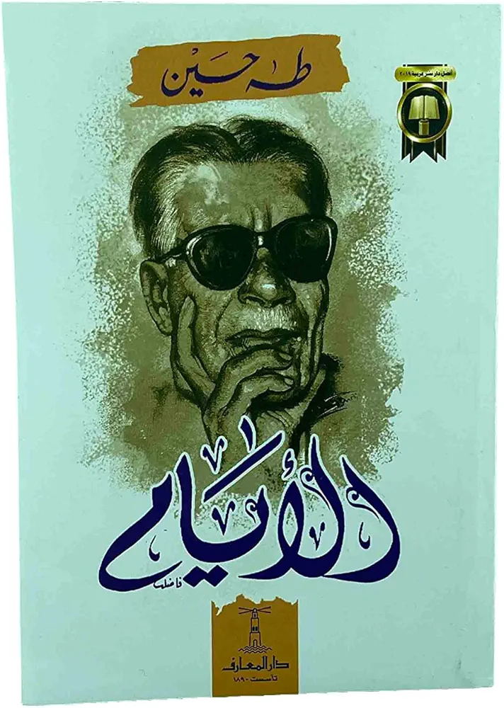

الناشر: دار المعارف تصنيف الكتاب: قصص شعبية ملخص: كتاب أسطوري يضم مجموعة من القصص الشعبية من الشرق الأوسط وجنوب آسيا وشمال إفريقيا، تم جمعها خلال العصر الذهبي للإسلام. يتم سرد القصص ضمن إطار قصة مركزية تتضمن الشخصية الرئيسية، شهرزاد، التي تحكي حكايات للملك شهريار لتأجيل إعدامه. اهم ثلاث قصص:
علاء الدين ومصباح

علي بابا وأربعون حرامي
رحلات السندباد السبع
978-9770916775
موسم الهجرةالى الشمال
12000 ل.س

اسم المؤلف: الطيب صالح اسم الناشر:
الرواية نُشرت لأول مرة عام 1966 عن طريق دار العودة في بيروت. تم إعادة نشرها لاحقًا عبر دور نشر متعددة، مثل الهيئة المصرية العامة للكتاب ودار الهلال. التصنيف:
الأدب العربي الحديث,
أدب ما بعد الاستعمار,
الواقعية الاجتماعية والنقد الثقافي ملخص الكتاب:
"موسم الهجرة إلى الشمال" هي رواية تروي على لسان راوٍ مجهول يعود إلى قريته السودانية بعد إكمال دراسته في بريطانيا. هناك يلتقي بشخصية غامضة تُدعى مصطفى سعيد، الذي يكشف لاحقًا عن ماضٍ حافل بالتجارب والمآسي في أوروبا.
مصطفى عاش فترة في لندن، حيث استخدم ذكاءه وسحره لإقامة علاقات مع نساء أوروبيات، لكنه عاش تجارب قاسية أدت إلى مآسٍ مثل انتحار بعضهن واتهامه بقتل زوجته.
الرواية تتناول قضايا الهوية الثقافية، صراع الشرق والغرب، وتبعات الاستعمار على الفرد والمجتمع.
القصة تسلط الضوء على معاناة مصطفى سعيد كرمز للإنسان الشرقي الذي يحاول الانتقام من الغرب عبر الجنس والهيمنة العاطفية، لكنها أيضًا تتناول أزمات الهوية والانتماء. أهم ثلاث قصص في الرواية: 1. "قصة حب مصطفى سعيد بـ "جين موريس
هذه العلاقة تمثل ذروة مأساة مصطفى سعيد، حيث كانت جين نموذجًا للمرأة الغربية التي يرى فيها الغرب الاستعماري. العلاقة بينهما كانت معقدة ومليئة بالصراع، وانتهت بجريمة قتل جين، التي حوكم بسببها مصطفى. 2. حياة الراوي في القرية
الراوي يعكس التناقض بين حياة القرية البسيطة والمتأثرة بالقيم المحلية وحياة مصطفى سعيد المليئة بالتجارب الغريبة. لقاء الراوي بمصطفى سعيد وماضيه المعقد يثير تساؤلات الراوي عن نفسه وهويته. 3. اختفاء مصطفى سعيد
بعد وفاة مصطفى سعيد في ظروف غامضة، يُترك الراوي مع مسؤولية الاعتناء بعائلة مصطفى. لكنه يجد نفسه في صراع بين إرث مصطفى وغموض حياته، وهو ما يعكس الصراع الأوسع بين الشرق والغرب.
978-9770916643
الخبز الحافي
10000 ل.س

اسم المؤلف: محمد شكري اسم الناشر:
تم نشر الرواية لأول مرة باللغة الفرنسية عام 1972 عن طريق دار "إي سويل" (Éditions du Seuil). لاحقًا تُرجمت إلى العربية ونُشرت في العديد من النسخ، أبرزها بواسطة "الهيئة المصرية العامة للكتاب". التصنيف:
أدب السيرة الذاتية,
الواقعية الاجتماعية,
أدب المهمشين (الواقعية القاسية) ملخص الكتاب:
"الخبز الحافي" هو سرد صريح لحياة محمد شكري، الذي عاش طفولة بائسة في المغرب مليئة بالجوع، الفقر، والعنف الأسري. تبدأ الرواية بوصف حياة الكاتب في قريته الجبلية، حيث كان والده يعنفه ويهينه. لاحقًا، ينتقل إلى مدينة طنجة، ليجد نفسه في الشارع بين المتسولين والمنحرفين، ويعمل في مهن شاقة لإعالة نفسه.
الرواية تتناول مراحل حياته الأولى حتى بلوغه سن العشرين، حين قرر تعلم القراءة والكتابة، ما شكل نقطة تحول في حياته.
الرواية تسلط الضوء على معاناة الطبقات المهمشة بالمجتمع المغربي خلال فترة الاستعمار وما بعده. أهم ثلاث قصص في الرواية: 1. موت شقيقه الأصغر بسبب الجوع
محمد شكري يروي بمرارة كيف فقد شقيقه الأصغر بسبب سوء التغذية والفقر المدقع، بينما لم يملك العائلة سوى البكاء، مع عجز تام عن تقديم أي شيء. القصة تعكس قسوة الحياة وتأثير الفقر على الأسرة. 2.العمل في الشوارع والاحتكاك بالمجتمع السفلي
أثناء طفولته وشبابه، عمل شكري في الشوارع، واحتك بمنحرفين، بائعات هوى، ومدمنين. يصف تجربته مع هؤلاء وكيف أصبح الشارع مدرسة لتعلم النجاة في مجتمع قاسٍ. 3.تعلمه القراءة والكتابة في سن العشرين
هذه القصة تُعتبر نقطة الأمل والتحول. رغم الظروف القاسية، قرر شكري أن يتعلم القراءة والكتابة، مما ساعده في التعبير عن معاناته وتحويلها إلى أدب خالد.
978-9770916790
ظل الريح
15000 ل.س

اسم المؤلف: كارلوس رويث زافون اسم الناشر:
نُشر الكتاب لأول مرة عام 2001 بواسطة دار شتوتغارت للنشر (Planeta) في إسبانيا.
النسخة العربية من الكتاب ترجمها محمود عبد الله ونُشرت بواسطة دار الشروق. التصنيف:
أدب غموض,
أدب تاريخي,
رواية اجتماعية,
أدب فانتازي ملخص الكتاب:
"ظل الريح" هو أول كتاب من سلسلة "مقبرة الكتب المنسية" للكاتب الإسباني كارلوس رويث زافون. تدور أحداث الرواية في مدينة برشلونة بعد الحرب الأهلية الإسبانية. يبدأ الكتاب عندما يقوم دانيال ستمبان، الفتى الصغير، بزيارة مكان سري يُسمى "مقبرة الكتب المنسية"، وهو مكتبة ضخمة تحتوي على كتب قديمة تم نسيانها. هناك يجد دانيال كتابًا غامضًا بعنوان "ظل الريح" للكاتب جوليان كاراكز، ويقرر أن يكتشف المزيد عن هذا الكاتب.
تتوالى الأحداث لتكشف عن سلسلة من الأسرار المتعلقة بجوليان كاراكز، وعلاقته بالحرب الأهلية، والفساد، والمكائد التي تحيط بحياة الكاتب. الرواية تجمع بين الغموض، الحب، الخيانة، والصراع بين الخير والشر. أهم ثلاث قصص في الرواية: 1. قصة "جوليان كاراكز" واختفاء كتبه
جوليان كاراكز هو كاتب غامض تعرضت أعماله للرفض والنسيان. دانيال يتابع آثار هذا الكاتب ليكتشف أن كتبه اختفت بشكل متعمد من جميع المكتبات، حيث كان هناك شخص ما يسعى لحرق جميع كتبه والتخلص من أعماله. 2. قصة "دانيال ستمبان" وصديقه فيرمين
دانيال يسير على خطى جوليان كاراكز محاولًا كشف أسرار حياته، ويكتشف العلاقة بين ماضي والده وصديق له يدعى فيرمين. فيرمن هو شخصية غريبة ولكنه يصبح أحد الأصدقاء المهمين لدانيال، ويساعده في تحقيق هدفه. 3. قصة "الفساد والسياسة في برشلونة" خلال وبعد الحرب الأهلية
الرواية تكشف عن الصراعات السياسية والفساد في برشلونة في فترة ما بعد الحرب الأهلية. تتداخل أحداث الماضي مع الحاضر لتظهر كيف أثر التاريخ والسياسة في الحياة الشخصية للأبطال، وكيف تشابكت شخصيات مختلفة في خيوط من الغموض.
978-9770916733
سيرة النبوية
20000 ل.س

اسم المؤلف: ابن هشام اسم الناشر:
الكتاب تم نشره لأول مرة في القرن التاسع الميلادي، وتم إعادة طباعته في العديد من دور النشر الحديثة، ومنها دار الجيل و دار الكتاب العربي. التصنيف:
تاريخ إسلامي
سيرة ذاتية,
,دين
,دراسة تاريخية
, سيرة النبي محمد (صلى الله عليه وسلم) ملخص الكتاب:
كتاب "سيرة النبي محمد" هو كتاب من تأليف ابن هشام، وهو أشهر مصدر تاريخي وأدبي عن حياة النبي محمد صلى الله عليه وسلم. يعتبر الكتاب اختصارًا وتعديلًا لكتاب "سيرة ابن إسحاق"، الذي يعد أقدم مصدر سيرة نبوية. يتناول الكتاب حياة النبي محمد منذ ولادته حتى وفاته، ويعرض السيرة النبوية من عدة جوانب: النشأة، الدعوة، الهجرة، الغزوات، والمعاملات مع الصحابة والأعداء.
كما يركز الكتاب على تجسيد شخصيته العظيمة وحكمته ورؤيته للإصلاح الاجتماعي والسياسي. يسلط الضوء على أحداث تاريخية مهمة في حياة النبي، ويستعرض معاناته من أجل نشر الدعوة الإسلامية، بالإضافة إلى تحديات المجتمع الجاهلي وحروب الردة. أهم ثلاث قصص في الكتاب: 1. مولد النبي صلى الله عليه وسلم
في هذه القصة، يتناول ابن هشام ذكرى ولادة النبي محمد صلى الله عليه وسلم في عام "الفيل"، وهي السنة التي حاول فيها أبرهة الحبشي مهاجمة مكة بهجوم الفيل، ولكن الله سبحانه وتعالى ردهم بجنود من السماء. وتستعرض القصة أيضا كيف ولد النبي في مكة في بيت عبد الله بن عبد المطلب، وكيف توفي والد النبي وهو في بطن أمه. 2. غزوة بدر
تعتبر غزوة بدر واحدة من أهم الغزوات في تاريخ الإسلام، حيث يروي الكتاب تفاصيل المعركة التي وقعت في السنة الثانية من الهجرة بين المسلمين وقريش. ورغم قلة عدد المسلمين، حققوا نصراً كبيراً بفضل الله. وتُعتبر هذه الغزوة نقطة تحول حاسمة في تاريخ الإسلام، حيث أثبت المسلمون قوتهم وأحقية دعوتهم. 3. الهجرة إلى المدينة المنورة
تعد الهجرة واحدة من أبرز محطات حياة النبي محمد صلى الله عليه وسلم. يروي الكتاب كيف أن النبي وأصحابه هاجروا من مكة إلى المدينة بعد أن اشتد الضغط من قريش. كما يذكر الكتاب تفاصيل رحلة الهجرة، وأحداثها المهمة مثل "الغار" الذي اختبأ فيه النبي وأبو بكر، وكيف بدأت الدولة الإسلامية في المدينة.
978-9770916092
الأيام
17000 ل.س

اسم المؤلف: طه حسين اسم الناشر: دار المعارف (يمكن أن يختلف حسب الطبعة) في 1929 (أول نشر) التصنيف:
سيرة ذاتية,
أدب عربي معاصر, ملخص الكتاب:
"الأيام" هو كتاب سيرة ذاتية للمفكر المصري الكبير طه حسين، وهو يعد من أبرز الأعمال الأدبية في الأدب العربي المعاصر. الكتاب يتناول مراحل مختلفة من حياة طه حسين منذ طفولته في صعيد مصر، مرورًا بتعليمته، وصولًا إلى حياته الجامعية في باريس وصراعاته الفكرية. ينقسم الكتاب إلى ثلاثة أجزاء رئيسية: 1. الطفولة في الريف
يتحدث طه حسين عن طفولته في محافظة "المينا" حيث نشأ في أسرة فقيرة. يروي عن حياته في قريته، ومشاعره بعد فقدان البصر، والطريقة التي كانت تساهم في تشكيل شخصيته. 2. المرحلة الدراسية في الأزهر:
يتناول الكتاب فترة دراسته في الأزهر وكيف كان شعور طه حسين بتحديات الدراسة في مؤسسة تقليدية، وتناقضات التعليم الديني مع التعليم العصري. 3. المرحلة الدراسية في فرنسا:
ثم يعرض الكتاب رحلة طه حسين إلى فرنسا، حيث درس في جامعة "مونبلييه" و"السوربون"، وتفاعل مع الثقافة الغربية، مما أثر في رؤيته للعالم بشكل كبير. يركز أيضًا على تحدياته الفكرية، وكفاحه في إثبات نفسه في بيئة ثقافية وعلمية جديدة.
يعتبر "الأيام" رحلة طه حسين الفكرية والروحية، ويكشف عن تطور شخصيته، وتحدياته في تجاوز محن الحياة، من فقدان البصر إلى مواجهة التحديات الفكرية في مجتمعه. أهم ثلاث قصص في الكتاب: 1. قصة فقدان البصر
يتذكر طه حسين في بداية الكتاب كيف فقد بصره وهو في سن مبكرة. يروي القصة بتفاصيل مؤلمة عن لحظات فقدانه لنعمة البصر، وكيف أن تلك الحادثة غيرت مجرى حياته. يتحدث عن عواطفه الطفولية وحزنه، وعن كيفية تأثير فقدان البصر على طموحاته وحياته اليومية. 2. قصة رحلته إلى باريس
يحكي طه حسين عن مغامرته التعليمية في فرنسا، بداية من وصوله إلى باريس إلى التحديات التي واجهها هناك. يتناول كتاب "الأيام" كيف تطورت رؤيته الفكرية هناك، وكيف شكلت دراساته في الأدب الفرنسي والفلسفة الأوروبية ثقافته الجديدة. كما يروي كيف تفاعل مع الأساتذة والزملاء في باريس، وتعلم كيف يواجه تحديات البيئة الجديدة. الدروس: 3. قصة مواجهاته الفكرية
يحكي الكتاب عن العديد من الصراعات الفكرية التي مر بها طه حسين في حياته، خاصة فيما يتعلق بالدين، والفكر التقليدي. يظهر الكتاب مواجهاته الفكرية مع القيم السائدة في مجتمعه، وتأكيده على أهمية العقلانية والتفكير النقدي. يروي طه حسين كيف كانت آراؤه تتعارض مع آراء الكثير من علماء عصره في القضايا الدينية والفكرية.